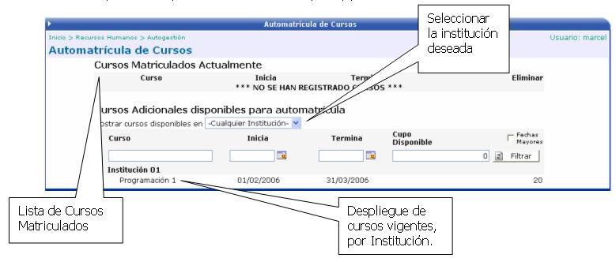
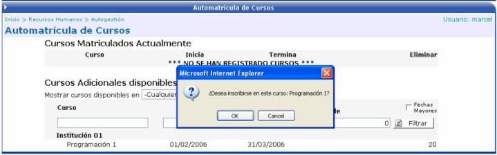

Esta funcionalidad esta directamente relacionada con el módulo de Capacitación y Desarrollo, esta funcionalidad permite al empleado incluirse dentro de un curso que se haya previamente abierto en la empresa y que de acuerdo al perfil de la empresa es de valor para el puesto de cada empleado.
Para poder matricular algún curso, éste tiene que estar vigente en el periodo que se desea realizar la matrícula. La siguiente pantalla es la que se presenta al usuario cuando éste desee matricular algún curso de capacitación que este ofreciendo la empresa, ya sea a nivel interno o externo.

Como primer paso se debe de seleccionar la institución para que se desplieguen los cursos que la misma ofrece. Luego se debe hacer click sobre el curso deseado y el sistema le preguntará que si desea matricular ese curso. Si la respuesta es OK, el usuario quedara matriculado automáticamente:
